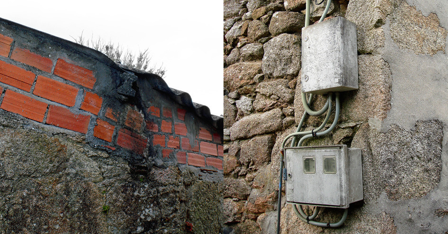

Resarcimiento
Publicado elEste post mío que hoy recupero aquí, se publicó hace 10 años en el blog Canibalismo Patrimonial Periférico del periódico gallego Praza.gal. En ese momento, además de mi trabajo en Arinspunk, participaba intensamente en Niquelarte, un colectivo que trabajaba con el patrimonio material e inmaterial de una manera un tanto heterodoxa 😬
En nuestro país, el camino desde la tradición hasta la contemporaneidad lo recorrimos de golpe, sin transición. Se mezclaron la piedra, la madera, la teja, el lino, con el cemento, el aluminio, el fibrocemento, el nailon, y lo nuevo y lo antiguo quedaron separados pero también unidos en una gran cicatriz.
Algunos lo llamaron "feísmo", pero debemos hablar con claridad, eso es solo basura intelectual (una más) arrojada desde el Polígono Industrial de Sabón. ¿Por qué feo? ¿Por no ajustarse a un canon de belleza que nunca le importó a las instituciones? ¿Por qué nuestro entorno rural y nuestros pueblos difícilmente pueden convertirse en parques temáticos patrimoniales como muchas de las calles de Compostela? ¿Porque arruinamos la postal?
Podríamos pensar que su afirmación se insertaba dentro de una estrategia mayor de asimilación y uniformización (que existe), pero sería suponerles una mayor capacidad. El proyecto capitalista que nuestras élites desarrollaron durante el siglo XX obtuvo, desde la propia óptica capitalista, un resultado mediocre, y al final del proceso, quisieron disfrazar parte de su fracaso diciendo que lo que fue una adaptación apresurada de la gente frente a su negligencia, era algo feo que debíamos borrar. Pobres...
La cicatriz está ahí, es completamente evidente y no puede ser borrada. Pero no tiene sentido hablar de si es más o menos fea. Eso no es lo importante de una cicatriz. La lectura provechosa, además de recordarnos que a pesar de todo estamos vivos, es que cada cicatriz encierra una historia, una historia en este caso que es nuestra.
Dejemos de mirarla como algo de lo que avergonzarnos y sumerjámonos en ella. Vamos a conocer más sobre lo que fuimos y somos, y también nos ayudará a crear nuestro propio relato. Porque aquí, en la herida curada a toda prisa con aires salados y agrios, encontraremos belleza. No la verdadera, eso no existe, pero sí la nuestra propia.